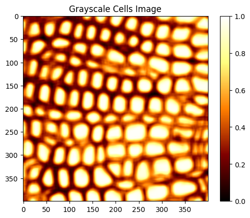
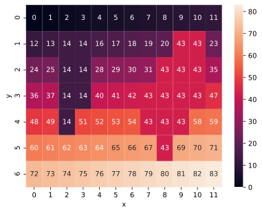

Assignment 2: Union Find And Plant Cell Segmentation (46 Points)
Chris Tralie
Overview / Logistics
The purpose of this assignment is to give you practice implementing data structures and manipulating variables in python in the service of a cool application in image processing.
Click here to download the starter code for this assignment. When you are finished, upload a zip file to canvas with your modified cells.py and unionrankpc.py
scikit-image
This homework requires you to have the scikit-image library, which does not come bundled with anaconda. If you're in spyder, you can install it by typing the following into the console:
If you are in jupyter, you can type the following into a cell:
Learning Objectives
- Translate a real world problem into a format required by an abstract data type
- Work with lists, dictionaries, and 2D arrays in concert in python
- Use union find for efficient segmentation in images
Background
Watershed Algorithms
Image processing is an applied area of algorithms at the intersection of math and computer science that is broadly applicable across engineering, medicine, science, and art. One example scientific application is the automatic labeling and understanding of cell tissue, such as the image below, taken from the creative commons source at this link

Let's say we wanted to figure out the locations of the cells as a preprocessing step to other analysis, such as figuring out the density of cells in a region or analyzing their shape. Finding such locations is known as image segmentation. To accomplish this, we could label the regions or draw their boundaries by hand, but this would be extremely tedious, especially if we have to process thousands of images of cells for an analysis. So it is of interest to automate segmentation with computer algorithms. To do this, we turn to a class of segmentation algorithms known as watershed methods, and we will explore a simple version in this assignment.
Watershed methods earn their name because we can think of them like a physical process where rain falls on a image, and water pools in features of interest, which are cells in this case. For a more direct analogy with how we've discussed union find so far, one can also think of these techniques as forming bubbles that merge together to fill up these regions.
Watershed methods operate on grayscale versions of images; that is, each pixel is a real number where dark pixels are smaller numbers and light pixels are larger numbers. To keep things simple, we make 0 the darkest possible grayscale value and 1 the brightest possible grayscale value, as shown in the image below, which is the grayscale version of the cells we started with:

When we look at this image, we notice that pixels on the inside of cells are brighter than the boundaries between cells. We can exploit this observation to design a watershed algorithm based on union find. Each pixel starts off as its own "bubble." If a pixel i is greater than some threshold and one of its neighboring pixels j is also greater than this threshold, then the bubbles containing i and j should merge. The bubbles will get larger and larger when we do this for all such neighboring pixels, but the bubbles will not connect across cell boundaries, so eventually, they conform to the shape of the cells.
2D Arrays in Python / Numpy
A 2D array is a natural data structure for a grayscale image, since the images have both rows an columns. 2D arrays in python work just as they do in Java or C++, but they're even easier to initialize, particularly in numpy. For example, to create a 2D numpy array with 100 rows and 50 columns, one would type
and to access an element at row 31, column 10, one would typeAnd actually, since this is a numpy array, there's another syntax you can use:
Programming Tasks
You will use your optimized disjoint set ADT from lab 2 to implement the watershed algorithm for the cells image above, and you will then use the components to mark the centers of each cell. I've broken this down into three tasks:
Union find modifications (10 Points)
First, we have to make our union find data structure compatible with pixel locations. In the past, I've had students come up with a unique mapping from pixels to numbers so we don't have to change the data structure. But there's a more elegant, less confusing, and less error prone way to do this. Instead of using nonnegative integers to represent the objects in a disjoint set data structure, we can use arbitrary hashable objects. In particular, you will use 2-element tuples (i, j) describing pixel locations.
Your Task
Take your unionrankpc.py file from lab 2 and make the following modifications:
-
Change the constructor to accept no parameters except for
self; the disjoint set will start off empty -
In the constructor, change the
parentsandranksto be empty dictionaries{}instead of lists -
Add a method called
makesetthat takes in a new object that will part of the set. Set this object's rank to be 0, and set its parent to be itself
Because dictionary access and assignment looking exactly like array access and assignment in python, you shouldn't have to change any of your other code.
Here's a simple example of how to use this new union find data structure on a 10x10 zero-indexed grid:
Get Cell Labels (18 Points)
In this section, you will implement the basic version of the watershed algorithm using the disjoint set ADT by creating a method get_cell_labels in cells.py. The method should take in two parameters
- A grayscale image of cells as a 2D array
- A threshold, which is a float between 0 and 1. If two pixels are neighboring pixels whose grayscale value is both above this threshold, they should be unioned together.
To accomplish this, you should do the following:
- Use union find to merge neighboring pixels together that are over the threshold
-
Come up with a number for each pixel, where pixels with the same roots have the same number. The easiest way to do this is to create a dictionary to translate between tuple locations of pixels
(i, j)and the numberx. So you'd make the key a tuple and the value the unique number corresponding to that tuple.
The image below shows an example of running the following code in the __main__ in cells.py (or in a jupyter cell that imports cells.py), and you should see something like this once you've finished your get_cell_labels method:
Hints
-
Be sure to make a set for each pixel location
(i, j) -
If
(i, j)is above the threshold, union it with its neighbors that are also above the threshold. - When you create the labels array, you'll have to figure out a way to convert the tuple of the root of each pixel to a unique number. The easiest way to do this is to use a dictionary, where the key is a root tuple, and the value is a label.
-
To save problems downstream, make sure the labels array uses integer types. If you're using numpy, the easiest way to do this is to initialize it like:
where
imgis the original grayscale image
Get Cell Centers (18 Points)
Now that you have all pixels belonging to each cell in one component, you will compute the center of each cell by averaging the pixel coordinates of all of the pixels that belong to that cell.
To implement this, create a method called get_cluster_centers, which takes in an image of labels generated from your code in the last section, and which returns an array of [i, j] locations of the centers of each cell, where i is the average row and j is the average column. You should only return centers which have more than one pixel in them. Furthermore, your code should run in O(MN) time, where M and N are the number of rows and columns, respectively, in the image.
If this works properly and you execute the code below in your main (or in a jupyter cell):
Then you should get a picture that looks like this:

Hint
If you're totally stuck on where to get started, have a look at the hint below
One possible way to do this is to have an algorithm like this
The problem with this is, there are M x N pixels and M x N labels. This means that these loops together will go through (M2N2) iterations. In our example where M = N = 400, this is 25.6 billion iterations! This is way to slow to be practical, as it is a "quartic" algorithm (O(N4) when M and N are about the same).
Instead, we should try to come up with an algorithm that only has to loop through some constant factor of M*N. The problem with the labels data is it really isn't in the right format to do this, so we need to copy it over to another format that holds the same information, but where it is more convenient to efficiently compute averages for each label.
Let's look at an example of what this might look like. Let's say that we generated the following labels image:
Then we might create a list indexed by the label. In this example, there are 7 rows and 12 columns, so the label indices would go from 0, 1, 2, ..., 7*12-1 = 83. We could create a list with 84 elements, each indexed by the label number. Each element would itself be a list of all of the coordinates of the pixels belonging to that label. For the above example, that would look like this:
| Label | Pixels List |
| 0 | [[0, 0]] |
| 1 | [[0, 1]] |
| ... | |
| 14 | [[1, 2], [1, 3], [2, 2], [2, 3], [3, 2], [3, 3], [4, 2]] |
| 15 | [] |
| 16 | [[1, 4]] |
| 17 | [[1, 5]] |
| ... | |
| 43 | [[1, 9], [1, 10], [2, 8], [2, 9], [2, 10], [3, 7], [3, 8], [3, 9], [3, 10], [4, 7], [4, 8], [4, 9], [5, 8]] |
| 44 | [] |
| 45 | [] |
| 46 | [] |
| 47 | [[3, 11]] |
| ... | |
| 82 | [[6, 10]] |
| 83 | [[6, 11]] |
Note that most of the list labels have 0 or 1 pixel location belonging to them, but label 14 and label 43 each have more than 1 pixel, so we treat those as cells and average the coordinates that are there.
Actually, a better data structure than a list for this task is a python dictionary (Sheehy 2.4.4), since many of the labels will be completely empty
For those interested...
If you've finished the above and you're itching for more, here are a few ideas you can explore (none of them are required!):
- We ended up drawing the center of each cell, but as we mused about in the background, sometimes we want to know more about the shape of the cell. Modify the code so that it draws the boundaries of cells instead of just their center. The boundary should be expressed as a sequence of pixels in counter-clockwise order
- We had manually set a threshold of 0.7 in this assignment, but is there a way you can think of to autotune the threshold to get good cell segmentations?
- Are there images other than the cells image we looked at here that would work well with this algorithm? Try them out and share your results!